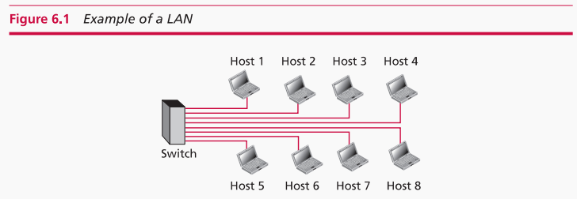
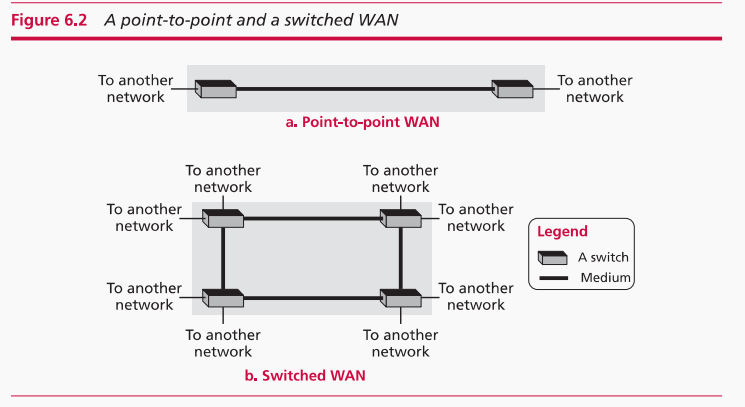
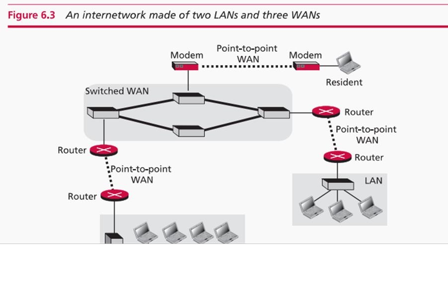
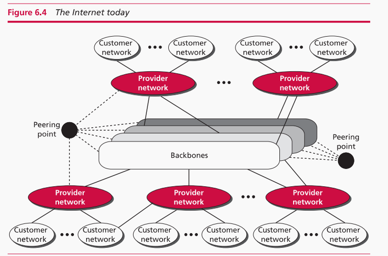
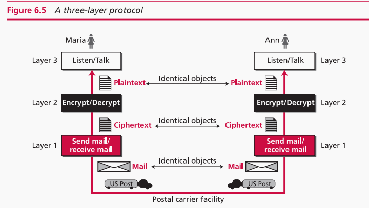
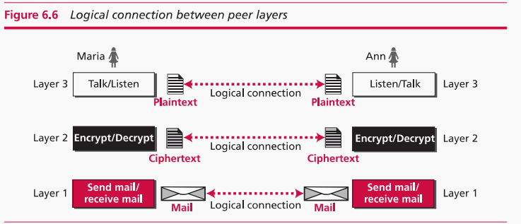
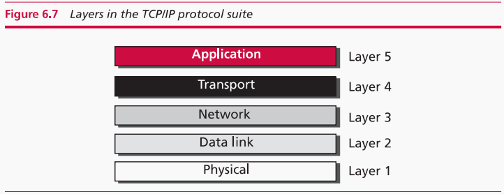
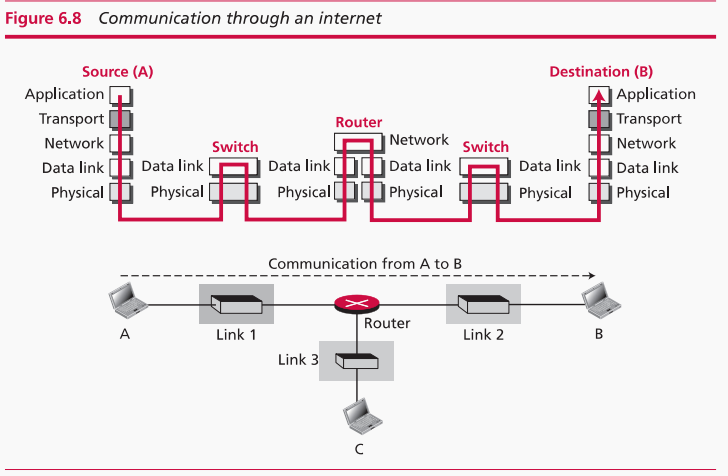
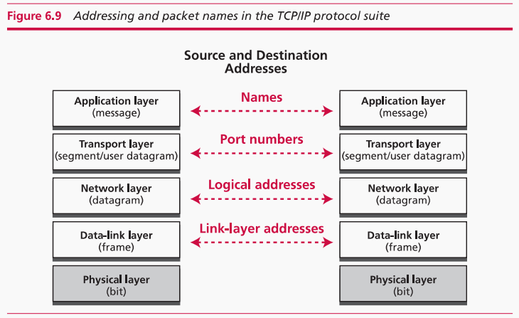

<!DOCTYPE html>
<!-- Designined by CodingLab | www.youtube.com/codinglabyt -->
<html lang="en" dir="ltr">
  <head>
    <meta charset="UTF-8">
    <title> Chapter 5 </title>
    <link rel="stylesheet" href="../css/sidebar.css">
    <link rel="stylesheet" href="../css/Chapter4.css">  
    <!-- Boxiocns CDN Link -->
    <link href='https://unpkg.com/boxicons@2.0.7/css/boxicons.min.css' rel="stylesheet">
     <meta name="viewport" content="width=device-width, initial-scale=1.0">
   </head>
<body>
  <!-- <header class="content-header">
    <div class="empty">  
    </div>  

        <a href="#personal-center" class="personal-center">Personal Center</a>  

</header>   -->

<div class="sidebar">
  <div class="logo-details">
    <a href="../index.html">
      
    </a>
    
  </div>
  <ul class="nav-links">
    <li>
        <a href="overview.html">
          <i class='bx bx-grid-alt' ></i>
          <span class="link_name">Overview</span>
        </a>
        <ul class="sub-menu blank">
          <li><a class="link_name" href="#">Overview</a></li>
        </ul>
      </li>
      <li>
        <div class="iocn-link">
          <a href="#">
            <i class='bx bx-collection' ></i>
            <span class="link_name">Knowledge</span>
          </a>
          <i class='bx bxs-chevron-down arrow' ></i>
        </div>
        <ul class="sub-menu">
            <li><a class="link_name">Knowledge</a></li>
            <li><a href="Chapter1.html">1. Hardware</a></li>
            <li><a href="Chapter2.html">2. Computer</a></li>
            <li><a href="Chapter3-1.html">3. Software</a></li>
            <li class="sub-links"><a href="Chapter3-1.html">I. Operating systems</a></li>
            <li class="sub-links"><a href="Chapter3-2.html">II. Algorithms</a></li>
            <li class="sub-links"><a href="Chapter3-3.html">III. Prog. Lang.</a></li>
            <li><a href="Chapter4.html">4. Data</a></li>
            <li><a href="Chapter5.html">5. Network</a></li>
            <li><a href="Chapter6.html">6. Bigdata and AI</a></li>
          
        </ul>
      </li>
      <li>
        <div class="iocn-link">
          <a href="#">
            <i class='bx bx-book-alt' ></i>
            <span class="link_name">Exercise</span>
          </a>
          <i class='bx bxs-chevron-down arrow' ></i>
        </div>
        <ul class="sub-menu">
          <li><a class="link_name" href="#">Exercise</a></li>
          <li><a href="QUIZ.html">Quiz</a></li>
          <li><a href="test.html">Test</a></li>
        </ul>
      </li>
      <li>
        <a href="resources-book.html">
          <i class='bx bx-pie-chart-alt-2' ></i>
          <span class="link_name">Resources books</span>
        </a>
        <ul class="sub-menu blank">
          <li><a class="link_name" href="#">Resources</a></li>
        </ul>
      </li>
      <li>
        <a href="resources-video.html">
          <i class='bx bx-pie-chart-alt-2' ></i>
          <span class="link_name">Resources video</span>
        </a>
        <ul class="sub-menu blank">
          <li><a class="link_name" href="#">Resources</a></li>
        </ul>
      </li>
      <li>
        <a href="A.html">
          <i class='bx bxs-book-open'></i>
          <span class="link_name">Glossary</span>
        </a>
        <ul class="sub-menu blank">
          <li><a class="link_name" href="#">Glossary</a></li>
        </ul>
      </li>
      <li>
        <a href="inforum.html">
          <i class='bx bx-line-chart' ></i>
          <span class="link_name">Forum</span>
        </a>
        <ul class="sub-menu blank">
          <li><a class="link_name" href="#">Forum</a></li>
        </ul>
      </li>
      <li>
        <div class="iocn-link"></div>    
      </li>
      <li>
        <a href="coding.html">
          <i class='bx bx-compass' ></i>
          <span class="link_name">Explore</span>
        </a>
        <ul class="sub-menu blank">
          <li><a class="link_name" href="#">Explore</a></li>
        </ul>
      </li>
      <li>
        <a href="history.html">
          <i class='bx bx-history'></i>
          <span class="link_name">History</span>
        </a>
        <ul class="sub-menu blank">
          <li><a class="link_name" href="#">History</a></li>
        </ul>
      </li>
      <li>
        <a href="faq.html">
          <i class='bx bx-question-mark'></i>
          <span class="link_name">FAQ</span>
        </a>
        <ul class="sub-menu blank">
          <li><a class="link_name" href="faq.html">FAQ</a></li>
        </ul>
      </li>
      <li>
    <div class="profile-details">
      <a href="personal.html">
        <div class="profile-content">
          
        </div>
        <div class="name-job">
          <div class="profile_name">nickname</div>
          <div class="job">CS learner</div>
        </div>
        </a>
        <a href="../index.html">
        <i class='bx bx-log-out' ></i>
      </a>
    </div>
  </li>
</ul>
  </div>
  <section class="home-section">
    <div class="home-content">
      <i class='bx bx-menu' ></i>
      <span class="text"></span>
    </div>
    <div class="content-elements">
        <nav class="toc">  
            <h2>Computer Networking</h2>  
            <ul>  
                <li><a href="#learning-suggestion">Learning Suggestions</a></li>  
                <li><a href="#network">Network</a></li>  
                <li><a href="#local-area-network">Local Area Network</a></li>  
                <li><a href="#wide-area-network">Wide Area Network</a></li>  
                <li><a href="#internetwork">Internetwork</a></li>  
                <li><a href="#internet">The Internet</a></li>  
                <li><a href="#protocol-layering">Protocol Layering</a></li>  
                <li><a href="#tcp-ip-protocol-suite">TCP/IP Protocol Suite</a></li>  
            </ul>  
        </nav>  
    
        <div class="content-section" id="learning-suggestion">  
            <h1>Learning Suggestions</h1>  
            <p>The advent of personal computers has heralded profound transformations in various sectors, including business, industry, science, and education. A similar wave of revolution has swept through the realm of networking. Ongoing technological advancements are enabling communication links to convey signals with greater speed and efficiency. Consequently, services are evolving to harness this extended capacity. Pioneering research in this domain has spawned innovative technologies with a primary objective: the seamless exchange of data, spanning text, audio, and video, across the globe. Our aspiration is to access the Internet for swift and precise downloading and uploading of information, unrestricted by time or place.</p>  
            
            <p>Upon completing this chapter, students should be able to:</p>  
            <ul>  
                <li>Define Local Area Networks (LANs) and Wide Area Networks (WANs) and distinguish between them.</li>  
                <li>Differentiating between an internet and the Internet.</li>  
                <li>Explain the significance of the TCP/IP protocol suite as the foundational network model of the Internet.</li>  
                <li>Define the layers within the TCP/IP protocol suite and understand their interrelationships.</li>  
                <li>Describe various applications operating at the application layer.</li>  
                <li>Elaborate on the services offered by transport-layer protocols.</li>  
                <li>Discuss the services provided by network-layer protocols.</li>  
                <li>Outline the diverse protocols utilized at the data-link layer.</li>  
                <li>Define the responsibilities of the physical layer.</li>  
                <li>Examine the varied transmission media employed in computer networking.</li>  
            </ul>  
            
            <p>While the primary aim of this chapter is to explore the Internet, a global system that links billions of computers, it's vital to consider the Internet not as a solitary network but as an intricate web of interconnected networks. With this perspective in mind, we commence our journey by first defining what constitutes a network. Subsequently, we delve into the methods of interconnecting these networks, forging compact internetworks. Finally, we unveil the intricate structure of the Internet, setting the stage for in-depth exploration in the remainder of this chapter.</p>  
        </div>  
    
        <div class="content-section" id="network">  
            <h1>Network</h1>  
            <p>A network encompasses the interlinking of a collection of devices capable of communication. Within this definition, a device could be a host, often referred to as an end system, ranging from substantial computers, desktops, laptops, workstations, to the more compact cellular phones and security systems. It can also denote connecting devices such as routers, which establish connections to other networks, switches that facilitate the connection of various devices, modems (short for modulator-demodulator), altering the form of data, and so forth. These devices within a network are connected via wired or wireless transmission media, like cables or airwaves. For instance, when two home computers are linked using a plug-and-play router, a network is born, albeit a small one.</p>  
        </div>  
    
        <div class="content-section" id="local-area-network">  
            <h1>Local Area Network</h1>  
            <p>A Local Area Network (LAN) is typically privately owned, interconnecting hosts within a single office, building, or campus. The extent of a LAN varies according to the requirements of an organization. It could be as straightforward as two PCs and a printer in a home office or span an entire company, encompassing audio and video devices. Each host within a LAN bears a unique identifier, an address that distinguishes it within the LAN. When a host sends a packet to another host, it includes both the source host's and the destination host's addresses.</p>  
            
        </div>  
        
        <div class="content-section" id="wide-area-network">  
            <h1>Wide Area Network</h1>  
            <p>A Wide Area Network (WAN) is likewise an assembly of communication-capable devices; however, there exist distinctions between a LAN and a WAN. A LAN typically has limitations regarding its size, covering an office, building, or campus, whereas a WAN boasts a more expansive geographical scope, spanning a city, state, nation, or even the entire world. In a LAN, hosts are interconnected, whereas in a WAN, connecting devices like switches, routers, or modems are interconnected. LANs are typically privately owned by the organizations utilizing them, while WANs are generally established and managed by communication service providers, leased by organizations in need.</p>  
            
            <p>A point-to-point WAN is a network linking two communicating devices through a transmission medium, be it a cable or the airwaves. In contrast, a switched WAN encompasses more than two endpoints. As we'll explore shortly, a switched WAN plays a pivotal role in global communication backbones, and it can be regarded as an amalgamation of several point-to-point WANs interconnected through switches.</p>  
        </div>  
    
        <div class="content-section" id="internetwork">  
            <h1>Internetwork</h1>  
            <p>Today, encountering a LAN or a WAN in isolation is exceedingly rare; they are frequently interlinked. When two or more networks are connected, they amalgamate into an internetwork, often referred to as an internet (with a lowercase 'i'). </p>  
            
            <p>Consider an organization with multiple offices as an example. Each office maintains a LAN that enables internal communication among employees. To facilitate communication between employees in different offices, the management may lease a point-to-point dedicated WAN from a service provider, such as a telephone company, to connect the two LANs. Consequently, the organization now possesses an internetwork or a private internet (with a lowercase 'i'). Communication between offices is now attainable.</p>  
            
        </div>  
    
        <div class="content-section" id="internet">  
            <h1>The Internet</h1>  
            <p>As previously discussed, an internet (with a lowercase 'i') is a union of two or more networks capable of communication with each other. The most renowned internet is the Internet (with an uppercase 'I'), comprising thousands of interconnected networks.</p>  
            
            <p>The Internet is an amalgamation of backbones, provider networks, and customer networks. At the top tier, the backbones are expansive networks owned by notable communication companies. These backbone networks are linked through intricate switching systems known as peering points. On the second level, you find smaller networks termed provider networks, which utilize the services of the backbones for a fee. Provider networks are interconnected with backbones and sometimes with other provider networks. At the edge, we encounter customer networks, which are the networks actually using the services offered by the Internet. These customer networks pay fees to provider networks for the services they receive.</p>  
    
            <p>Backbones and provider networks are commonly referred to as Internet Service Providers (ISPs). Backbones are sometimes designated as international ISPs, while provider networks are often referred to as national or regional ISPs.</p>  
            
        </div>  
    
        <div class="content-section" id="protocol-layering">  
            <h1>Protocol Layering</h1>  
            <p>The term we frequently encounter when discussing the Internet is "protocol." A protocol delineates the rules that all parties, including the sender, receiver, and all intermediate devices, must adhere to in order to communicate effectively. In straightforward communication scenarios, a single, simple protocol might suffice. However, in more complex communication scenarios, the task may necessitate division across various layers, each furnished with its own protocol — this is known as protocol layering.</p>  
            
            <h2>Principles of Protocol Layering</h2>  
            <p>Let's delve into some fundamental principles of protocol layering. The first principle dictates that for bidirectional communication, each layer should be capable of performing two opposing tasks, one in each direction. For instance, at the third layer, one task is to listen (in one direction), and the other is to talk (in the other direction). The second layer needs to manage encryption and decryption, while the first layer handles the sending and receiving of messages.</p>  
            
            <p>The second crucial principle to adhere to in protocol layering is that the objects under each layer at both ends should be identical. In other words, the object under layer 3 at both ends should be a plaintext letter, the object under layer 2 should be a ciphertext letter, and the object under layer 1 should be a piece of mail.</p>  
       
            <h2>Logical connections</h2>
            <p>Following these principles, we can envision logical connections between each 
                layer, as illustrated in Figure 6.6. This concept introduces the idea of layerto-layer communication.
                Maria and Ann can visualize the presence of logical (imaginary) connections at 
                each layer, enabling them to transmit objects created at that layer. This 
                concept of logical connections facilitates a better understanding of the 
                layering process prevalent in data communication and networking.</p>
                
        </div>  
    
        <div class="content-section" id="tcp-ip-protocol-suite">  
            <h1>TCP/IP Protocol Suite</h1>  
            <p>Now that we have a grasp of the concept of protocol layering and the logical communication between layers in our previous scenario, let's introduce the TCP/IP (Transmission Control Protocol/Internet Protocol). TCP/IP is a protocol suite, which means it's an organized set of protocols organized into different layers, widely used in the Internet today. It adopts a hierarchical structure, with interactive modules, each delivering specific functionalities. This hierarchy entails that each upper-level protocol relies on services provided by one or more lower-level protocols. The TCP/IP protocol suite comprises five layers.</p>  
            
            <h2>Layered Architecture</h2>  
            <p>To demonstrate how these layers in the TCP/IP protocol suite are involved in communication between two hosts, let's assume we want to use the suite in a small internet consisting of three LANs (links), each with a link-layer switch. These links are connected by a single router.</p>  
            
            <p>Suppose computer A wants to communicate with computer B. In this communication, we have five devices participating: the source host (computer A), the link-layer switch in link 1, the router, the link-layer switch in link 2, and the destination host (computer B). The level of involvement of each device depends on its role within the internet.</p>  
            
            <p>The two hosts are engaged in all five layers, as they are responsible for creating messages at the application layer and transmitting them down through the layers until they are physically sent to the destination host. The destination host, on the other hand, needs to receive the communication at the physical layer and then transport it through the remaining layers to the application layer.</p>  
            
            <p>The router is involved in three layers; typically, there is no transport or application layer in a router when it's solely used for routing. Depending on the number of links connected to the router, a router may be engaged in n combinations of link and physical layers, where n is the number of links the router connects.</p>  
            
            <h2>Addressing and Packet Names</h2>  
            <p>An essential part of protocol layering is addressing and packet naming. As mentioned earlier, in this model of communication, we establish logical communication between pairs of layers. Any communication involving two parties necessitates two addresses: a source address and a destination address. Although it might appear as if we need five pairs of addresses, one per layer, we typically have only four. This is because the physical layer doesn't require addresses; it deals with individual bits, which do not possess addresses.</p>  
            
        </div>  
        <footer>  
            <p>&copy; 2024 Computer Science Learning Resource</p>  
        </footer>  
    </div>
  </section>

<script>
  let arrow = document.querySelectorAll(".arrow");
  for (var i = 0; i < arrow.length; i++) {
    arrow[i].addEventListener("click", (e)=>{
   let arrowParent = e.target.parentElement.parentElement;
   arrowParent.classList.toggle("showMenu");
    });
  }
  let sidebar = document.querySelector(".sidebar");
  let sidebarBtn = document.querySelector(".bx-menu");
  console.log(sidebarBtn);
  sidebarBtn.addEventListener("click", ()=>{
    sidebar.classList.toggle("close");
  });
  </script>

</body>
</html>